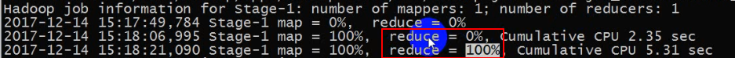
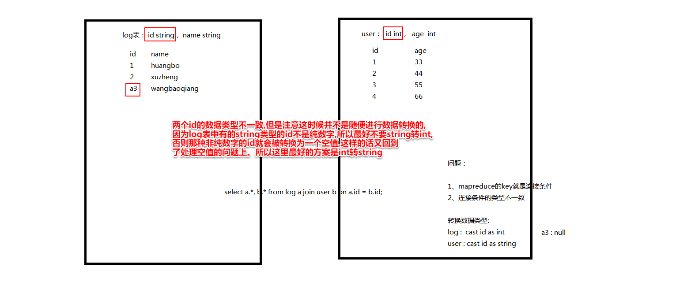

一、给hive的客户端运行sql语句的执行环境设置变量的时候有三种形式：
1、在hive的安装包的配置文件中进行设置
hive-site.xml + hive-default.xml
安装包中的各种默认配置 + 安装时设置的个性设置
系统默认的配置一般在hive-default.xml中,安装时用户自定义的配置一般在hive-site.xml中
如果在这两个文件中进行了各种配置的设置，会对有所有的hive会话生效, 并且hive-site.xml 和 hive-default.xml中重复设置了的配置选项会最终以hive-site.xml的配置为准。
2、在进入hive客户端的时候，设置的
hive -i 配置文件(init.conf)
hive -hiveconf x=y
如果采用此种方式进行参数的设置，
那么只对本次进入hive有效,退出hive后这些配置即失效
3、在进入hive客户端，使用set命令进行设置
如 set mapreduce.job.reduces= 4;
当前采用的这种方式设置的配置信息，只对本次进入hive后,set以后的所有SQL的执行生效, 退出hive后这些配置即失效
加载的顺序： 1 ---> 2 -=----> 3
加载的配置的覆盖关系：3 覆盖 2 ， 2 覆盖 1
二、HDFS中，为了给代码的运行环境设置对应的配置信息：
1、默认的配置文件
hdfs-default.xml
如果项目中携带了对应的jar包，所以这个配置文件会被自动加载
2、搭建hadoop集群时的site配置文件
hdfs-site.xml
如果一个配置在hive-site.xml中和hive-default.xml中都进行设置，最后生效的是hive-site.xml中设置的
3、在代码中，通过conf对象，进行设置
conf.set("fs.defaultFS","hdfs://hadoop02:9000");
如果使用这种方式进行设置，那么就会覆盖前面两种方式的设置
如果在一个项目中，既有hdfs-deafult.xml，也有hdfs-site.xml,也在代码中进行了设置。。
配置信息生效的顺序 依次 ：
hdfs-default.xml
hdfs-site.xml
conf.set....
也就说,后面生效的会覆盖前面生效的配置,也就是说最后生效的配置方法级别是最高的
hbase 中的 配置信息的生效顺序和 hdfs的一模一样,其实hive的也与hdfs类似。
还有一点需要注意:
每次在hive中跑sql语句,转换为mapreduce程序时,都会出现下面这几行语句:
In order to change the average load for a reducer (in bytes):
set hive.exec.reducers.bytes.per.reducer=<number>
In order to limit the maximum number of reducers:
set hive.exec.reducers.max=<number>
In order to set a constant number of reducers:
set mapreduce.job.reduces=<number>
hive.exec.reducers.bytes.per.reducer 设置一个recucerTask最多能够加载的数据量是多大 ： 默认是 256M
hive.exec.reducers.max 设置一个mapreduce任务能够运行的最多的reducerTask的数据量 默认是 1009
mapreduce.job.reduces 设置reduceTask的常数数量。即sql语句转换为mapreduce程序时会有多少个reduceTask
只会在 SQL语句中有 order by 出现的时候会忽略,其他的情况都会起作用
如果你给一个HQL语句设置了需要运行的reduceTask的数量，那么最终该mapredyuce程序就使用你设置的该redUceTask数量去运行
但要知道,部分SQL语句在运行的时候， 是没有reducer阶段的。
hive中的mapTask的设置也就是采用对应的hadoop版本中的 切片逻辑来决定
所以如果需要调整mapTask的个数。调整的方式和maprecue一模一样,也就是说无法在hive中进行修改
数据倾斜
大数据生态中的所有数据存储和计算系统都有一个共同点：不怕数据量大， 就怕数据倾斜
数据倾斜的直接后果：
1、造成任务的执行效率低下，还会闲置大量的计算资源
2、出现了数据倾斜，那么任务出错的概率会指数上升。
而且报错的绝大部分错都是： OOM ： out of memory(内存溢出)
数据热点 ： 假如在mapreduce编程场景中，如果大量的key都集中在某一个reduceTask中, 那就意味着，当前这个redcueTask所处理的数据量会明显大于其他的reduceTask的任务, 就相当于一个任务分散成的多个reduceTaks所处理的数据量不均衡,这就是数据热点。 造成负载不均衡, 就相当于部分节点的数据非常集中。把这种数据集中的现象叫做数据倾斜。所以数据热点和数据倾斜几乎是一个意思
负载均衡
要使负载均衡，就必须解决数据倾斜
数据倾斜产生的根本原因就是shuffle
reduceTask
因为不管怎么指定分发数据的规则。总之，没有一种完美的方法能让所有的reduceTask所接收的数据量都一致。
按照真实的业务逻辑，绝对不可能出现：所有的数据直接平分给所有运行该业务的reduceTask的节点
解决数据倾斜： 使用mapjoin 从根本上避免了shuffle 从而就没有reducer阶段，就没有数据倾斜的情况
容易出现数据倾斜的情况有那些？
编写HQL语句中，有哪些种类的HQL语句容易出现数据倾斜？？
从数据的角度去考虑，哪些种类的数据容易出现数据倾斜？？
从计算引擎的角度考虑，哪些模式下的计算能出现数据倾斜？？
HQL语句中的关键词：
select
from
join
where
group by
having
order by / sort by /distribute by / cluster by
limit
这些关键字当中，最容易出现数据倾斜的是 join 和 group by
包含group by 的SQL语句翻译成mapreduce程序的map阶段的输出key和value(或者说reduce阶段的输入key和value):
key： 就是group by后面的字段
value： 就是select 后面跟的所有字段连接起来
举例:
SELECT pageid, age, count(1) FROM pv_users GROUP BY pageid, age;
按照pageid和age分组,并且每一组的数据进行计数操作
转换成mapreduce:
key ：pageid 和 age
value ： 1
但如果group by 和sum count max min (不包括avg)等聚集函数搭配, 通常就会减少数据倾斜的现象。因为hive的内部进行了一些优化, 绝大部分能调用combiner进行优化的关键字,hive都进行了优化,调用了combiner(avg是不能使用combiner优化的)。所以能大大减少数据量,也就避免了大量数据的倾斜,倾斜的也是小数据倾斜。当然, 不使用group by和这些聚集函数搭配, 仅仅只使用聚集函数, 也是可以达到避免数据倾斜的目的
join的场景：
join中是连接条件的字段作为key, select后面跟的所有字段连接起来作为value。
绝大部分场景都是 日志表 * 业务表
业务表中,比如说该业务表是用户表,一个用户对应一条记录,而用户日志表中,一个用户则可能有很多条与该用户相关的记录,而有些用户则一条都没有
count(distinct 字段A)也容易出现数据倾斜, 因为它相当与按字段A为key进行分组,然后每组key只取一个value。其实count(distinct 字段A)底层就是group by。count(distinct 字段A)其实就是group by的key的组数,有多少组key,count(distinct 字段A)的值就是多少
从数据的根本上来考虑， 数据天生就不是均匀。
只有RDSMS中的数据按照主键来作为key来执行mapreduce时， 是均匀的,不出现数据倾斜(如select 主键 from 某表), 因为一个主键就是一条记录,若partitioner组件按照hash散列的方式散列到所有的reduceTask节点,那肯定就是均匀的,分到每个节点的数据量肯定是一样的。
combiner的作用：
combiner其实就相当于每个mapTask本地的一个reducer
就是为了给mapTask节点中计算之后产生的结果数据做一个预汇总
专业的术语就叫: 按照key做规约。 (规约就是reduce,就是聚合)
下面这些聚合函数都会调用combiner:
sum max min count (不包括avg)
判断一个mapreduce程序有没有出现数据倾斜主要是看每个reduceTask执行的时间是否相差比较大(可以看sql语句执行时打印的日志里reduce的执行进度,也可以看yarn集群网页里的日志信息里各个reduceTask的时间比),如果某些reduceTask执行的时间明显长于别的reduceTask一两分钟,那么就可以认为是出现了数据倾斜,reduceTask执行时间长,就是说明了该reduceTask的数据量大。当然mapTask不需要看,因为map阶段数据必然是均匀的,不会出现数据倾斜。
如果是看sql的执行日志: 如果reduce在执行到reduce = 95%后,之后打印的很多条进度日志,reduce进度都是一直在95%,没变化。 说明这个时候绝大多数的reduceTask都已经完成,而只要少数几个reduceTask还一直在运行,所以整个reduce阶段的进度不变,这个时候就可以断定出现了数据倾斜。(reduce的进度=已完成的reduceTask / 除以reduceTask的总数???)

join时产生的数据倾斜优化策略(这里的join是指reduceJoin,因为mapjoin不存在数据倾斜):
(1)hive中由于空值产生的数据倾斜(详细参考pdf)
解决空值的第一种方案是把空值和非空值分成两个mapreduce job来跑,也就是连接字段有空值的表的非空值和另一个表连接一下,然后空值单独查一下,最后做一下union all。

(2)hive中由于数据类型不一致的数据倾斜(详细参考pdf)

(3)大小表的join,使用mapjoin:
hive中的mapjoin:
select a.id aid, name, age from a join b on a.id = b.id;
select /* +mapjoin(a) */ a.id aid, name, age from a join b on a.id = b.id;
其中,/* +mapjoin(a) */是hive给定的方式,告诉hive用mapjoin的方式来执行这个sql语句,并同时指明a表是小表。
在 hive0.11 版本以后会自动开启 map join 优化，由两个参数控制：
//设置 MapJoin 优化自动开启
set hive.auto.convert.join=true;
//设置 小表 不超过多大时会开启 mapjoin 优化
set hive.mapjoin.smalltable.filesize=25000000
在默认情况下，如果join查询中的其中一张表的数据量不超过25M ，那么该join
查询会在hive的内部被自动转换成MapJoin
现有a b c三张表做连接， 其中a,b是小表， c表是大表,如果有如下两条sql语句:
select a.*, b.*, c.* from a join b on a.id = b.id join c on a.id = c.id;
select /* +mapjoin(a,b) */ a.*, b.*, c.* from a join b on a.id = b.id join c on a.id = c.id;
如果a表和b表的数据量大小都没有超过hive.mapjoin.smalltable.filesize的大小，那就意味着以上这两个SQL语句没有区别。都是会把a表和b表当成mapjoin的小表,c表当成mapjoin的大表。而添加/* +mapjoin(a,b) */就表示不管a表和b表有没有超过25M,都会把a表和b表当成mapjoin的小表, 都强制转换为mapjoin
如何优化mapjoin中的小表?

改进的mapjoin的sql语句:
select /*+mapjoin(x)*/* from log a
left outer join (
select /*+mapjoin(c)*/ d.*
from ( select distinct user_id from log ) c join users d on c.user_id = d.user_id
) x
on a.user_id = x.user_id;
其中
select /*+mapjoin(c)*/ d.*
from ( select distinct user_id from log ) c join users d on c.user_id = d.user_id
上面这个sql语句等价于:
select * from users where user_id in (select distinct user_id from log);
这个语句的作用也就是减少user表中的记录数, 只有出现在log表中的userid才要,以免user表中的记录太多,作为小表全加载到每台执行mapTask的节点中时会占用过多内存
所以 x表就是数据量缩小了后的user表
上面整个mapjoin的sql语句所带来的影响是:
1、整个任务的mapreduce的个数增加了。
2、但是在和 log表做链接时，转换成mapjoin时，每个maptask节点要开销的内存减少了。
hive中的sql变成mr程序跑的时候,有一行日志如下:
要注意的是, total jobs的数量并不是等于mr job的数量,而是等于mr job + hdfs移动数据的次数

一个operator就是total jobs中一个job ,也就是说一个operator就是一个mr job 或者是一次hdfs移动数据的操作

hive中的hql语句是会被转换成mapredue程序执行, 到底怎么转换?
antlr.jar 这个jar包的作用就是对sql语句进行语法 和 语义解析, 将SQL转换成一棵抽象语法树(AST)
hive转换为mapreduce程序就是通过抽象语法树来转换的,一步一步将一个一个的组件拼接起来,合并。
hive的底层实现原理
Operator 要么是一次 HDFS的数据移动操作 ，要么是一次mapreduce操作
operator就是整个hive转换过来的AST中的一个节点，就是hive中的一个最小数据处理单元
hive的优化
两个原则：
1、分布式的存储和计算都不怕数据量大
2、Hive的HQL语句的优化，要把HQL语句当做mapreduce来优化，不能当做SQL语句来优化, 优化普通的SQL的技巧不能使用在优化HQL语句上
PV : page_view,就是某页面的访问次数。打开一次页面(或进入一次该页面), 就算一次访问
一个网站的流量 ： 就是指pv,就是指一个网站到底有多少次访问
归并排序 (拿二路归并排序来说)
前提： 参与归并排序的数据集必须是有序的
作用： 当前的这个算法会同时读取这两个数据集中的元素
原理：
从两个数据集中分别读取一个元素， 参与比较大小，
按照升序合并，把小的元素输出，大的保留
从原来的那个小元素的数据集中再读取一个元素再跟大元素进行比较
以上过程不停重复。反正所有的数据都会输出到一个文件, 就是把两个数据集都合并成了一个数据集, 并且输出的所有元素都有序的
笛卡尔积该如何用mapreduce程序去翻译?
笛卡尔积和内连接的区别:
select a.*, b.* from a, b; //笛卡尔积
select a.*, b.* from a join b on a.id = b.id; //内连接
不管是内连接还是外连接， 转换为mapreduce时, 因为有连接条件。 把连接条件做为key,最终key相同的两份数据被分发到同一个reduce方法中(一般都是针对reduceJoin来说的, mapJoin相当于reduceJoin的优化)。先做区分，然后做两层循环进行连接
但是select a.*, b.* from a, b; 笛卡尔积没有连接条件, 若使用reduceJoin, mapTask如输出的key-value该如何确定?
如果是想将笛卡尔积转换为mapJoin,则有一个很简单的方法就是直接把小表先全部加载到内存并保存为一个列表,一行数据作为该列表的一个元素,然后到所有的mapTask节点, 这样, 以大表作为输入数据时,所有的mapTask就有了一份小表数据,用一层循环的方式直接循环遍历小表,让mapTask当前处理的大表的某行直接与小表的所有行相连,并输出,这样大表的每一行都与小表所有的行连一次。就可以完成该mapTask的笛卡尔积操作。但是mapJoin在使用笛卡尔积的时候同时用了子查询操作的话,容易出现未知Bug。所以有子查询操作的时候就要考虑reduceJoin了。
如果是想将笛卡尔积转换为reduceJoin, 那么首先要区分一下哪个是大表,哪个是小表,然后在大表中添加一列id列,id字段的值用rand随机分配 ,要让多少个reduceTask来执行该mapreduce程序, 就将rand里的随机数数量设置为多少个, 这样的话,大表里的id值基本均匀分布,然后,大表的不同的id值有几个,就复制多少份小表的数据, 然后分别在各个小表里都添加一列id列,然后同一个小表中的id列的值是大表id值中的其中一个,同一个小表里的id值全部相同,并且不同小表里赋的id值各不相同。将大表和所有小表都作为输入数据运行在mapreduce里,接下来以id字段作为map输出的key ,其他字段字段都作为value,并且标记好哪些数据是大表, 哪些是小表数据(就跟原先reduceJoin的处理一样)。由于id相同的key-value会分配到同一个reduceTask, 所以只需在每个reduceTask中,大表和小表直接用两层循环相连即可。这样的话才不会丢失结果条数, 若是只有一个小表,则必然丢失结果条数。原理如下图:

一个hive的查询语句翻译成两个mpareduce程序,那么 第二个mapreduce的maptask的个数由谁决定？
基本上由第一个mapreduce的reduceTask决定,第一个mapreduce程序的reduceTask有多少个,就会有多少个结果文件,所以,当这些结果文件都没有超过128M时,第二个mapreduce的maptask的个数就等于第一个mapreduce job 的reduceTask的数量,而如果第一个mapreduce程序的某结果文件超过128M,那肯定是要将该结果文件分成多个块的, 因此第二个mapreduce的maptask的个数也可能多于第一个mapreduce程序的reduceTask的个数
一般来说,若调整 splitSize 的大小(也就是逻辑切片的大小)都是往大了调, 很少往小了调的,因为启动一个jvm(或者说启动一个mapTask)所需的时间就是比较多的,把splitSize调小也就是减少数据量,也就是减少每个mapTask处理的时间,这有点得不偿失,相当于启动就占用了处理时间的很大一部分。所以逻辑切片往小了调的必要性不高
由于splitSize是由三个参数取中间值决定的, 而一般都是改变 mapreduce.input.fileinputformat.split.minsize和 mapreduce.input.fileinputformat.split.maxsize的值, 很少直接改 dfs.block.size的值, 因为 dfs.block.size是物理块的大小,也就是hdfs中一个物理块的大小。
CombineFileInputFormat是mapreduce中提供给我们的处理小文件的组件,使得在一个mapTask中,可以处理多个小文件
hive中默认的数据读取组件是CombineHiveInputFormat, 就是一个会合并处理小文件数据读取组件。为什么hive会这样默认设置? 因为hive中很多sql语句都是要由多个mapreduce程序来跑的, 所以很可能中间会产生很多的小文件, 这样处理也是hive对sql语句转mapreduce的一种优化

小文件合并:
hive.merge.mapfiles是设置在一个mr程序在只有map阶段时产生的结果小文件是否需要合并
hive.merge.mapredfiles是设置在mr程序结束时是否需要合并,如果多个job串联, 那么如果前面的mr程序产生的小文件比较多,则可以通过合并的方式来解决,只需把这个值设置为true。
hive.merge.size.per.task就是合并文件的大小。

reduceTask怎么决定
根据下图的设置:
hive.exec.reducers.bytes.per.reducer 是每个reduceTask所能处理的数据的上限
hive.exec.reducers.max 是reduceTask的最大个数
如果一个mapreduce的文件大小既超过了256M,reduceTask的个数也超过了1009,hive会如何处理这种情况?
如果某reduceTask所接收到的文件大小超过256M,那么一般会再启动一个reduceTask,但如果reduceTask的数量达到1009个,但还有数据没有reduceTask处理, 那么这个时候则不会再启动新的reduceTask, 而是会将原先的一些reduceTask重用,处理那些没有被处理的数据。

将参数 2 设定为 0.95*(集群中 datanode 个数)就是因为集群中时不时会有部分节点宕机, 而宕机就会影响整个mapreduce的执行速度。所以这样设置是一种经验。当然也可以设成0.92或0.98,自己根据集群的稳定性微调。
上面公式中的DataNode也可以改成nodemanager。DataNode的个数就基本上等于nodemanager的个数。因为HDFS集群和YARN集群几乎是重叠的, 也就是如果某个节点是Hdfs集群DataNode节点的,那么它一般也同时是Yarn集群的nodemanager节点, 因为只要这样才能保证本地计算。如果某节点上只有DataNode而没有nodemanager,那么该节点的数据肯定要通过网络传输到别的节点去处理, 而如果某节点上只有nodemanager而没有DataNode,那么该nodemanager分调度本节点的资源时,只能是别的节点的数据搬运过来做计算。
合并 MapReduce 操作
如果有多个同种类型的HQL语句, 最好的优化方式 就是 合并成一句,一般都能提升效率。
比如说有多条插入语句,则使用多重模式代替,如
from ......
insert ... select
insert ... select
以及
from ....
insert overwrite directory ....
insert overwrite directory ....
多重模式 和 mapjoin 能用就用！！这两个东西几乎没有缺点, 万金油。
分桶:
分桶查询
能够提高查询效率的前提条件： 两张表都得是按照连接条件做的分桶，并且分桶的个数一定要成倍数关系
分桶查询语句举例:
set mapreduce.job.reduces = N
select * from student distribute by age;
分桶插入
1、创建一张分桶表
2、编写一个分桶查询的SQL语句，然后把结果插入到分桶表中
即 insert into... select ....
分桶的好处
能够提高采样的效率
采样即 从数据集中随机抽取数据
采样是为了 了解整个数据集按照某个字段是怎样的一种的分布规律
比如说log表是用户的日志表。采样就能得出该log数据集中，哪些用户的记录数比较多，那些用户的记录数少。
如何采样??
若建表时有以下分桶规则语句:
CLUSTERED BY(userid) SORTED BY(viewTime) INTO 32 BUCKETS
则根据上面这条语句, 做如下分析: (上面的语句中假设把page_view表按userid分成了32个桶)
桶簇:
桶簇就是桶的簇数。桶簇就是细分桶的一种概念,桶簇就是用户自己指定的,用来给所有桶划分区域范围的。
一个桶簇可以包含一个桶或者多个桶,甚至可以是一个桶的一小部分。
若是一个桶簇就是一个桶,比如
SELECT * FROM page_view TABLESAMPLE(BUCKET 3 OUT OF 32);
32个桶,分成32个簇,所以一个桶就是一个簇(桶簇)
BUCKET 3 OUT OF 32：表示取的数据来自于 总共 32 个 桶簇 当中的第 3号 桶簇 的数据。因为一个桶就代表一个簇, 所以也表示取第三号桶。
若是一个桶簇是一个桶的一小部分,比如:
SELECT * FROM page_view TABLESAMPLE(BUCKET 3 OUT OF 64);
因为桶数是32, 簇数是64, 所以一个桶簇只包含半个桶。
则BUCKET 3 OUT OF 64表示的是取的是64个桶簇中的第3个桶簇,也就是指取第2个桶的前一半数据(3/2=1.5,所以是第2个桶的前一半数据)
若是一个桶簇包含多个桶,如:
SELECT * FROM page_view TABLESAMPLE(BUCKET 3 OUT OF 16);
因为桶数是32, 簇数是16, 所以一个桶簇包含两个桶。
则BUCKET 3 OUT OF 16表示的是取的是16个桶簇中的第3个桶簇,也就是指取第3个桶和第3+16=19个桶的数据。
注意:当一个桶簇包含多个桶时,桶簇取桶是按照取模来取桶的,也就是说在这些桶从1开始编号,用桶的编号模除以总桶簇数,若余数等于要取的那个桶簇, 就是要取出来的桶。如上面32个桶中,分为16个桶簇,取第3个桶簇,因为3%16=3, 19%16=3,故取的是第3个桶和第19个桶
SELECT * FROM page_view TABLESAMPLE(BUCKET 3 OUT OF 32 on userid);
on userid意思是按照userid字段进行采样, 但因为建表语句本身就是按照userid进行分桶,所以可以省略不写, 默认就是按照分桶字段进行采样。
SELECT * FROM page_view TABLESAMPLE(BUCKET 3 OUT OF 32 on name);
on name表示按照name字段进行采样, 因为采样字段可以和分桶字段不一样。但是如果这样采样的话该sql语句又会去扫描所有的数据了,这样分桶字段就对采样没有意义了。所以采样最好按照分桶字段去采样
文件存储格式
1、普通的文本文件 TextFile
2、压缩文件
3、序列化的二进制可压缩文件(mapreduce中的序列化文件里一般都是序列化的key-value) sequencefile
该种类型的文件存储的数据，其实就是一个个的key-value的序列化之后的值
4、列存储的文件格式 parqutFile
如果有一个需求：在一张有100个字段列的表中，查询某一字段的去重了之后的值的个数,sql语句如下:
select count(distinct name) from student;
针对以上这种需求，就会有特殊的一种文件格式： 即 列存储的文件格式
如果是这种文件格式, 以上这张表的数据，会按照一列一个小文件来存储。最终会生成100个小文件。最终该需求的实现中，所编写的SQL语句要扫描的数据，就只需扫描这100个小文件中的一个即可。
而所谓的行式的文件存储格式一般就是指普通的文本文件(TextFile),也是我们最常使用的文本存储格式
5、行列存储相结合的文件格式 RCFile, ORCFile
这种存储格式能够让分布式的计算程序要扫描的数据量降低到最低
但在分布式计算中,一般一份数据的所有行都会被处理到,所以在真正的使用当中,sequencefile和parqutFile是用的最多的,列式存储格式(parqutFile)可以减少扫描范围, 序列化的二进制可压缩文件格式(sequencefile)因为hadoop主要是基于key-value对存储数据的,所以用这种格式再反序列化,则加载时的效率是最高的。
join时产生数据倾斜时的优化:
下面这个优化的原理是: 如果reduceTask的某个key对应的value的数据量超过下面这个值,则会再启动一个mapreduce程序, 先前的mapreduce程序会把这些数据量过大的key再分发到多个reduceTask里去(也就是说先前的mr程序的reduceTask的数量比预设的reduceTask数量增多了), 避免数据倾斜, 也就是说先前mapreduce程序只对结果做一个预汇总,再把预汇总的结果传给新启动的mapreduce程序,让他对结果做最终的汇总即可(也就是说新启动的mr程序的reduceTask的数量才等于预设的reduceTask的数量),这样就能保证数据倾斜也能将结果顺利跑出来, 而不会因为内存溢出而导致跑不出结果, 虽然多启动了一个mapreduce程序会使跑出结果的时间延长很多, 但是相比数据倾斜来说要安全不少。

当group by 出现倾斜时,优化的原理和join的优化原理几乎是一样的,两者的优化都是通过多启动一个mr程序来解决,前面那个mr程序,就把产生数据倾斜的那部分数据分散到不同的reduceTask中去,然后做预汇总, 后面新启动的mr程序再做最终汇总。
hadoop编译相关:
之所以安装hadoop前,要安装编译过的hadoop安装包(或者把hadoop字节码下载下来编译一下)的目的是:
(1)把hadoop基于centos6.7的本地依赖库编译出来
(2)把snappy压缩算法也编译进来, 因为snappy压缩速度很快, 并且压缩率也没比gzip低多少。很好用, 后面spark可能会用,否则后面要用的话还需要重新装一遍snappy组件

整个大数据生态系统的计算方案的标准: 最快，最稳定, 最均衡的 把大数据的处理执行完毕
hive的最大特点：慢 和 稳定
hive中有很多机制:
推测执行机制: 在某个task执行慢的时候, 再在另一个节点启动一个相同的task,看看哪个先执行完
容错机制: 部分mapTask或reduceTask出错的话会进行出错重试
可以忍受慢， 但是不能忍受不稳定。
如果将来出现一个又稳定，有快的执行引擎。那么hive可能会被淘汰, 但是hive自己也作出了改变, hive 将底层所采用的执行引擎，已经由mapreduce迁移到了spark。
hive能流行的一个重大原因是因为: 操作使用简单。 提供的是一种类SQL的操作方式
hive的开发环境的搭建只是简单的一部分
hive的三大重点是:
hive的各种操作命令
hive的函数+数据类型
hive的优化
hadoop镜像站里都会有hadoop源码包和官方编译好的hadoop安装包,只安装的话可以直接下安装包, 也可以下源码包自己编译成安装包。
hadoop源码包(非安装包,编译时编译源码包,编译成安装包)编译时需要做哪些准备,需要什么东西, 可以参考源码包里的BUILDING.txt文档,里面会介绍。

如文档里写的编译要求的东西:

再比如说关于snappy压缩算法是否编译进来的可选项与说明:

将snappy编译进hadoop安装包(不是源码包)后, 在其/lib/native/目录下, 会有

hadoop3.0.0-GA.tar.gz 发布 2017-12-13